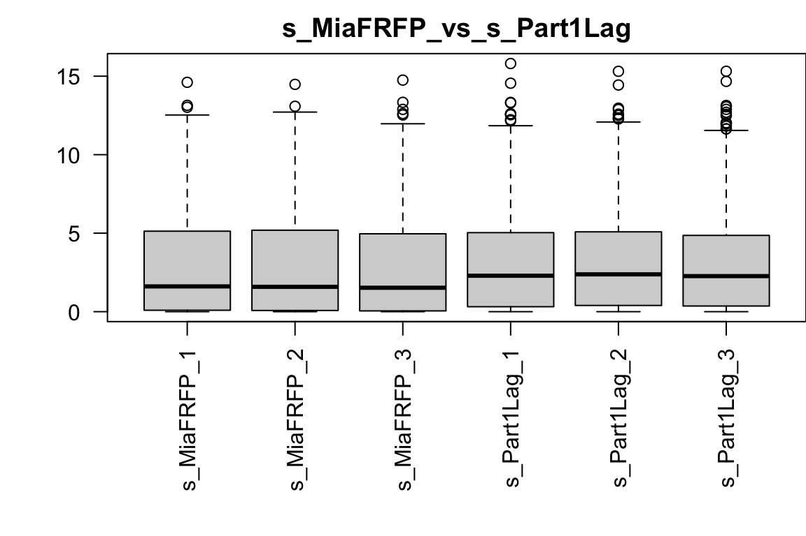
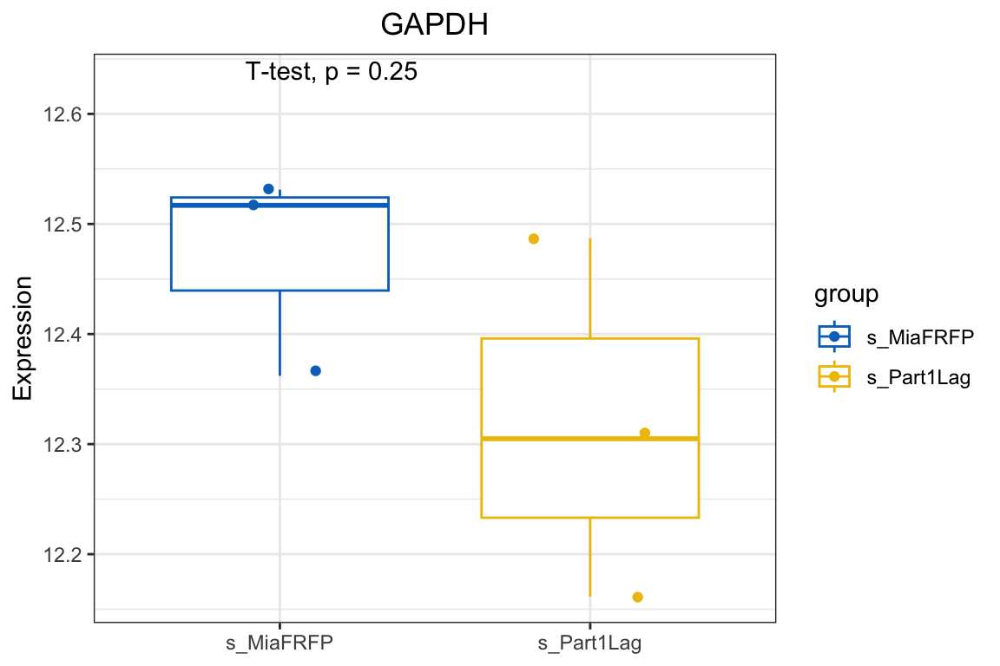
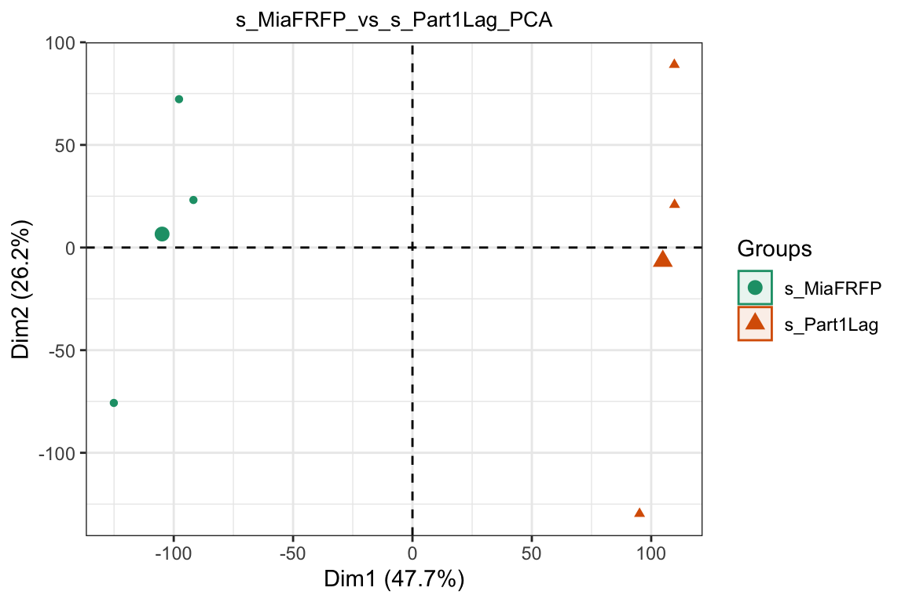
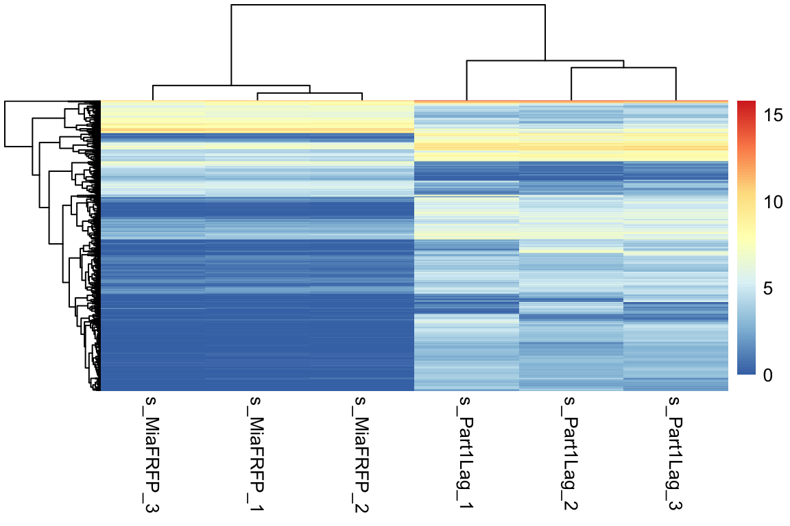
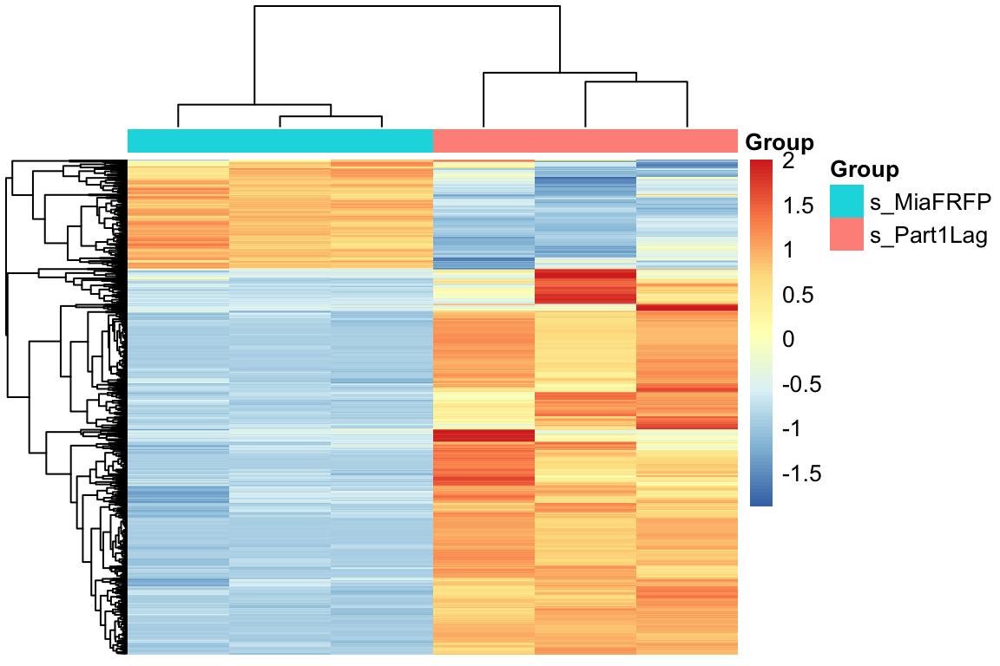
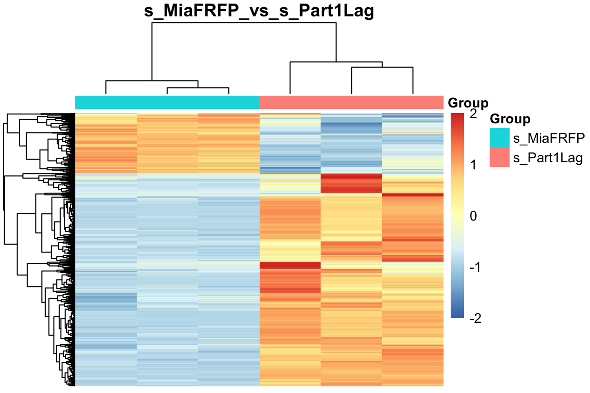
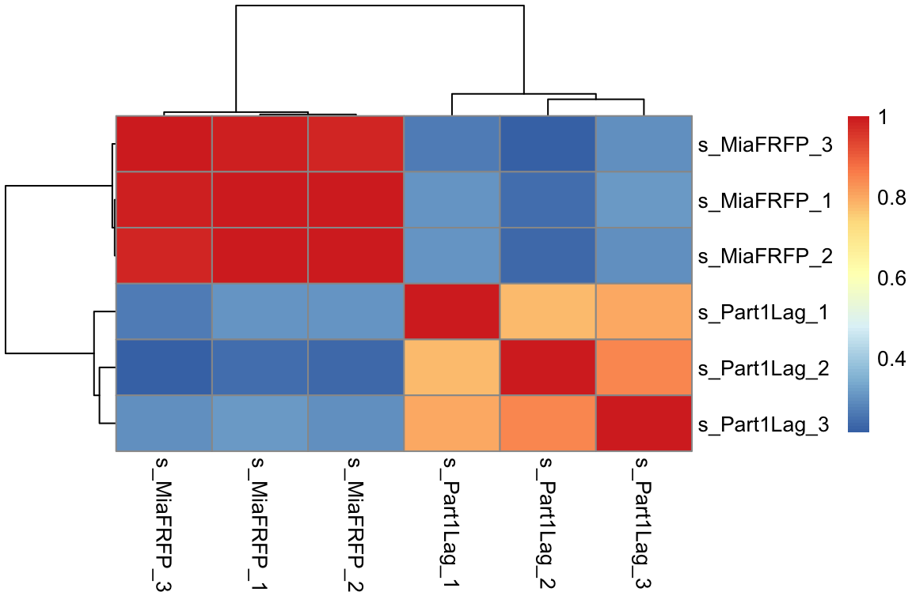
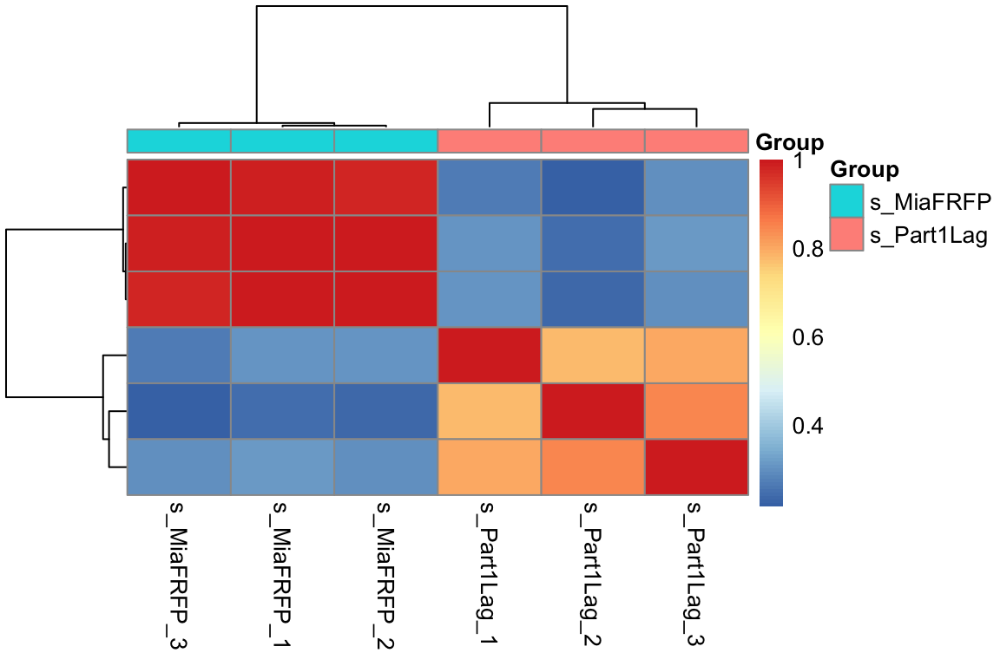
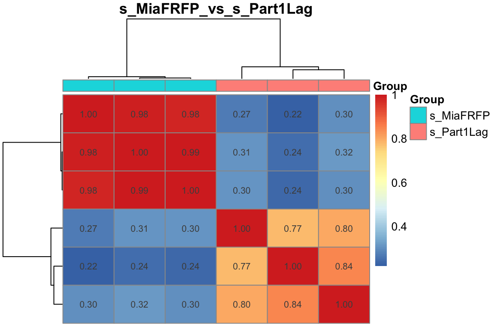
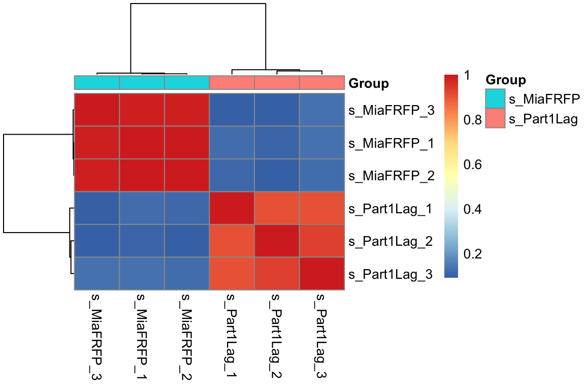

第 2 章 样本表达分布
2.1 加载数据
# 加载包
library(tidyverse)
library(ggplotify)
library(ggview)
# 加载变量
load(file = 'Rdata/symbol_matrix.Rdata')
# cpm 归一化
dat = log2(edgeR::cpm(symbol_matrix)+1)
dat[1:4,1:4]
## s_MiaFRFP_1 s_MiaFRFP_2 s_MiaFRFP_3 s_Part1Lag_1
## TSPAN6 0.03721777 0.000000 0.000000 0.0317213
## DPM1 5.71662319 6.098771 4.676184 6.4379710
## SCYL3 4.25132942 4.357822 3.828210 3.6224149
## FIRRM 5.22004517 5.615629 4.762597 4.6027733
pro = paste0(levels(group_list)[1], "_vs_", levels(group_list)[2]) # 希望的图Title2.2 箱线图

也可以查看自己关注基因的表达情况
# 加载包
library(ggpubr)
# 以 GAPDH 基因为例
target_gene = "GAPDH"
# 提取数据
df <- data.frame(expression = dat[target_gene, ], group = group_list)
# 创建箱线图
ggboxplot(df,
x = "group",
y = "expression",
color = "group",
palette = "jco",
add = "jitter"
) +
stat_compare_means(method = "t.test",
label.y = max(df$expression) + 0.1) +
labs(title = target_gene, x = NULL, y = "Expression") +
theme_bw() +
theme(plot.title = element_text(hjust = 0.5))
2.3 PCA
# 加载包
library("FactoMineR")
library("factoextra")
# 画PCA图时要求是行名时样本名，列名是基因名，因此此时需要转换
exp=as.data.frame(t(dat))
# PCA 计算
dat.pca <- PCA(exp , graph = FALSE)
# Tittle
this_title <- paste0(pro,'_PCA')
fviz_pca_ind(dat.pca,
geom.ind = "point", #c( "point", "text" )
col.ind = group_list, # color by groups
palette = "Dark2",
addEllipses = TRUE, # Concentration ellipses
legend.title = "Groups")+
ggtitle(this_title)+
theme_bw()+
theme(plot.title = element_text(size=10 ,hjust = 0.5))
2.4 基因热图
取方差最大的1000个基因，然后画热图
# 加载包
library(pheatmap)
# 取方差最大的1000个基因
cg <- names(tail(sort(apply(dat, 1, sd)),1000))
# 画热图
par(mar = c(8,4,2,0))
pheatmap(dat[cg,],show_colnames =T,show_rownames = F) 
对这1000个基因进行归一化，然后画热图，以及添加分组信息
# 加载包
library(pheatmap)
# 取方差最大的1000个基因
cg <- names(tail(sort(apply(dat, 1, sd)),1000))
n <- t(scale(t(dat[cg,]))) # 'scale'可以对log-ratio数值进行归一化
n[n>2] = 2 # 所有大于2的值都变成2
n[n< -2] = -2 # 所有小于-2的值都变成-2
# 添加分组信息
ac <- data.frame(Group=group_list)
rownames(ac) <- colnames(n)
# 画热图
par(mar = c(8,4,2,0))
pheatmap(n,
show_colnames = F,
show_rownames = F,
annotation_col= ac)
对这1000个基因进行归一化后，然后画区间热图，以及添加分组信息
# 加载包
library(pheatmap)
# 取方差最大的1000个基因
cg <- names(tail(sort(apply(dat, 1, sd)),1000))
n <- t(scale(t(dat[cg,]))) # 'scale'可以对log-ratio数值进行归一化
n[n>2] = 2 # 所有大于2的值都变成2
n[n< -2] = -2 # 所有小于-2的值都变成-2
# 添加分组信息
ac=data.frame(Group=group_list)
rownames(ac)=colnames(n)
# 画热图
par(mar = c(8,4,2,0))
pheatmap(n,
show_colnames =F,
show_rownames = F,
main = pro,
annotation_col=ac,
breaks = seq(-2,2,length.out = 100) # 添加区间
)
2.5 样本间相关性热图
取方差最大的1000个基因，做样本间相关性热图
# 加载包
library(pheatmap)
# 取方差最大的1000个基因
cg <- names(tail(sort(apply(dat,1,sd)),1000))
exprSet=dat[cg,]
par(mar = c(8,4,2,0))
pheatmap(cor(exprSet)) 
取方差最大的1000个基因，做样本间相关性热图，以及添加分组信息
# 组内的样本的相似性应该是要高于组间的！
colD <- data.frame(Group=group_list)
rownames(colD) <- colnames(exprSet)
pheatmap::pheatmap(cor(exprSet),
annotation_col = colD,
show_rownames = F)
取方差最大的1000个基因，做样本间相关性热图，以及添加分组信息,Title和相关性值
# 取方差最大的1000个基因
cg <- names(tail(sort(apply(dat,1,sd)),1000))
exprSet=dat[cg,]
colD <- data.frame(Group=group_list)
rownames(colD) <- colnames(exprSet)
pheatmap::pheatmap(cor(exprSet),
annotation_col = colD, # 添加分组信息
display_numbers = T, # 显示相关性值
show_rownames = F,
show_colnames =F,
main = pro)
取中位数偏差最大的500个基因，做样本间相关性热图，以及添加分组信息
# 取中位数偏差最大的500个基因
exprSet_mad <- exprSet[names(sort(apply(exprSet, 1, mad),decreasing = T)[1:500]),]
pheatmap::pheatmap(cor(exprSet_mad),
annotation_col = colD)